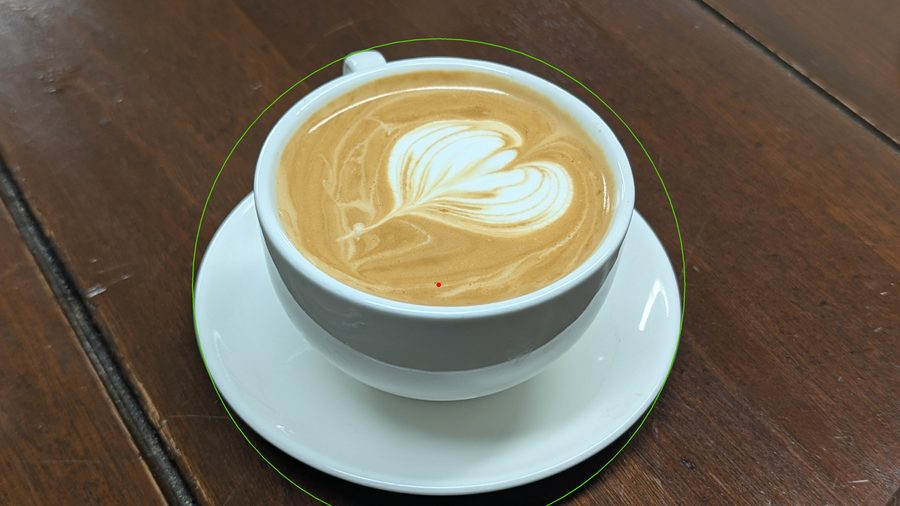
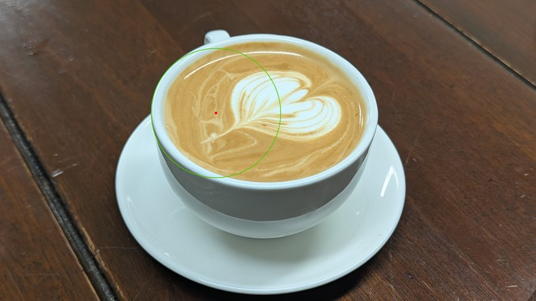
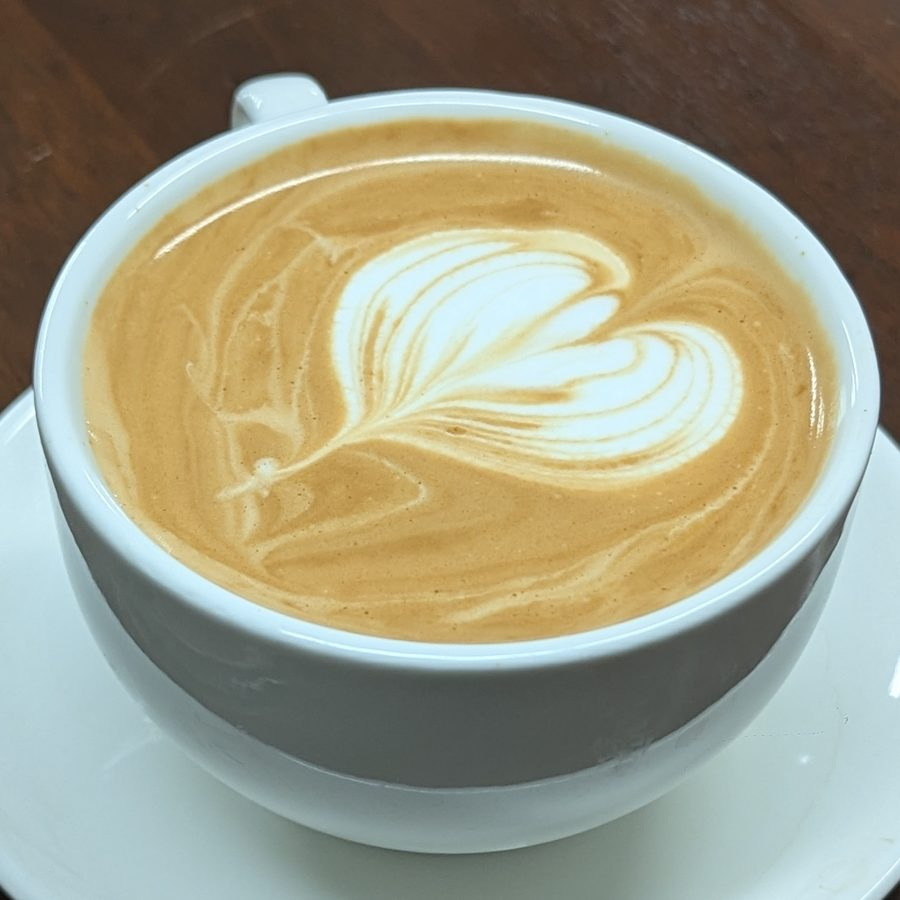
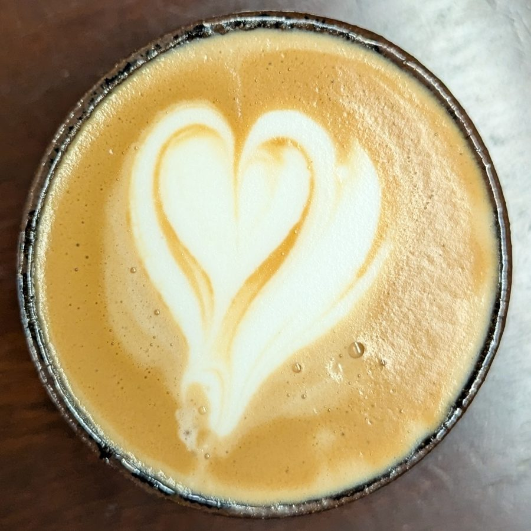

Coffee Cropper
Automated circle detection for latte art photos — because manually cropping 116+ images is not a plan. Five methods, one winner, and a wood grain problem that turned out to be the whole game.
The problem
Every latte art photo on this site gets the same treatment: find the coffee circle, crop to it with a small buffer, export. The alternative is doing it by hand for each of 116+ photos, and then again every time a new one is added. Not a plan.
The complication: the photos vary. Different cup colors — white ceramic one day, brown stoneware another. Different distances, different angles. And always the same dark walnut table in the background, whose wood grain produces circular-ish edge patterns that confuse naive edge detectors.
Classic approach: Hough circle transform. The challenge: picking the right circle out of everything the algorithm finds.
The pipeline
All five methods tested below share this skeleton. The differences are in what happens between resize and the Hough call — and that difference turns out to matter a lot.
Five methods, two hard cases
Each method was tested on 8 photos. The green circle shows where the algorithm thinks the coffee is. The red dot is the detected center. Two test cases expose the methods' weaknesses most clearly:


Why bilateral filtering wins
A Gaussian blur would kill the wood grain noise — but it would also kill the cup rim edge. A bilateral filter does something more selective: it averages pixels together only when they're both spatially close and similar in intensity. The cup rim, with its sharp gradient from ceramic to coffee, is preserved. The wood grain, with its low-contrast texture, gets smoothed out.
Controls what gets smoothed
Pixel pairs with intensity difference < σ_color are treated as "same region" and averaged together. Wood grain has small local contrasts — it gets blurred. The cup rim has a large gradient — it's preserved as a sharp edge.
Controls the spatial reach
Within a 9-pixel diameter neighborhood, pixels contribute to the average weighted by both their spatial distance and intensity similarity. Large σ_space lets the filter average across a wide enough area to suppress the grain pattern.
The result: the cup rim becomes the dominant circular feature in the edge map. Hough circles finds it reliably on white cups, brown stoneware, anything with a visible rim.
The production method in use
Method 4 — bilateral + Hough — is what runs on every new latte photo. The core detection is about 20 lines:
# resize to working resolution so radius ratios are consistent scale = WORK_SIZE / max(h, w) # WORK_SIZE = 900 small = cv2.resize(image, ...) # bilateral filter: preserves cup rim, kills wood grain gray = cv2.cvtColor(small, cv2.COLOR_BGR2GRAY) filtered = cv2.bilateralFilter(gray, d=9, sigmaColor=80, sigmaSpace=80) # Hough circle detection on the clean image circles = cv2.HoughCircles( filtered, cv2.HOUGH_GRADIENT, dp=1, minDist=int(min_dim * 0.30), param1=60, param2=28, minRadius=int(min_dim * 0.12), # MIN_R_RATIO maxRadius=int(min_dim * 0.62), # MAX_R_RATIO ) # pick the circle closest to the image center best = min(circles[0], key=lambda c: dist(c[:2], image_center)) cx, cy, r = best / scale # back to original resolution
The radius ratio bounds (0.12–0.62 of the smaller image dimension)
reject circles that are too small to be the coffee surface or too large to be
anything other than spurious noise. The "closest to center" selection assumes the
photo is reasonably composed — which, for a latte art photo, it almost always is.
Final crops
After detection, the circle is expanded by a small buffer ratio and cropped to a square. Both white and brown cup cases:

